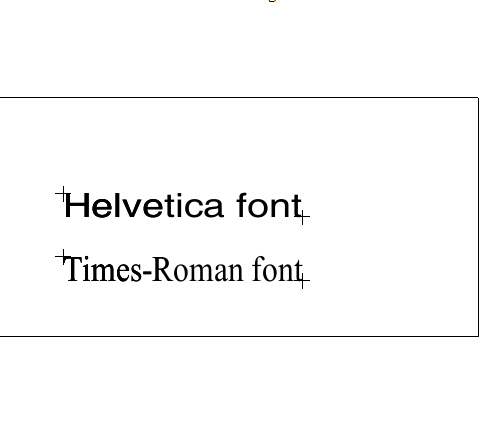

| Source image | Reference image |
|---|---|
 |
This test uses the ACI file to substitute a font. The CGM file displayed on the left contains 2 restricted text elements. The text at the top uses a font named "Bogus" and the other uses "Helvetica". The ACI file substitutes "Courier New" for the font named Bogus. The image on the right shows how the CGM should be rendered with the substitution.